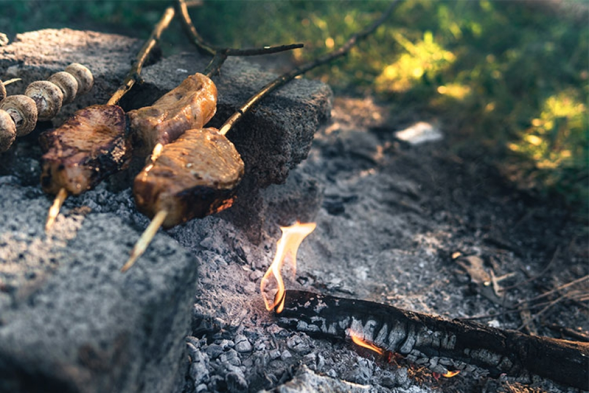

Gravlax

Description
Gravlax or graved salmon is a Nordic dish consisting of salmon that is cured using a mix of salt,
sugar and dill. It is garnished with fresh dill or sprucetwigs and may occasionally be
cold-smoked afterwards.
Ingredients
- 1 lb fresh salmon fillet, skin on
- 1/4 cup salt
- 1/4 cup sugar
- 2 tbsp crushed black pepper
- 1 large bunch fresh dill
Steps
- In a small bowl, combine the salt, sugar, and crushed black pepper.
- Spread half of the dill on a large piece of plastic wrap. Place the salmon fillet skin-side down on the dill,
and then cover the fillet with the salt mixture.
- Top the salmon with the remaining dill and wrap the plastic wrap tightly around the fillet.
- Place the wrapped salmon on a tray or dish and refrigerate for 48-72 hours, turning the fillet every 12 hours to
ensure even curing.
- After curing, remove the salmon from the plastic wrap and gently scrape off the dill and curing mixture.
- Thinly slice the gravlax and serve on rye bread or crispbread with a dollop of mustard sauce.